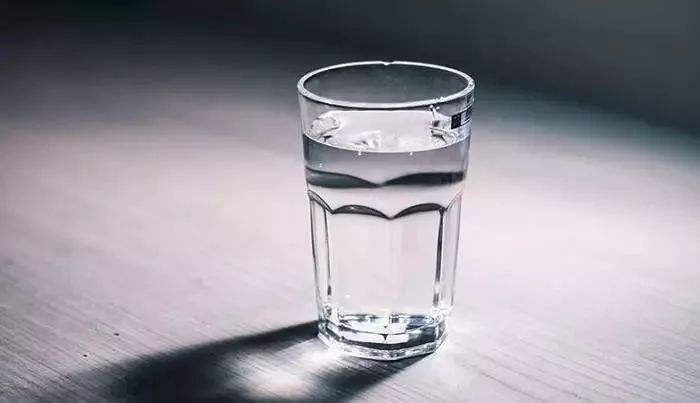

净水设备购买的五个真相，你知道了吗？
10.8W 围观203 回答

净水设备购买的五个真相，你知道了吗？
10.8W 围观203 回答
桶装水是如何生产的，知道真相之后男默女泪...
10.8W 围观203 回答
身体不适的时候，多喝热水真的有用吗？
10.8W 围观203 回答
人每天喝多少水最合适？
喝水有利于身体的观点已经越来越被人们所接受，那么从科学的喝水概念来讲，人一天应该......
6种不能喝的致命水有哪些
1、久置水：开水久置以后，其中含氮的有机物会不断被分解成亚硝酸盐。尤其是放够久的开水，难免有细菌污染，此时含氮有机物快速分解......